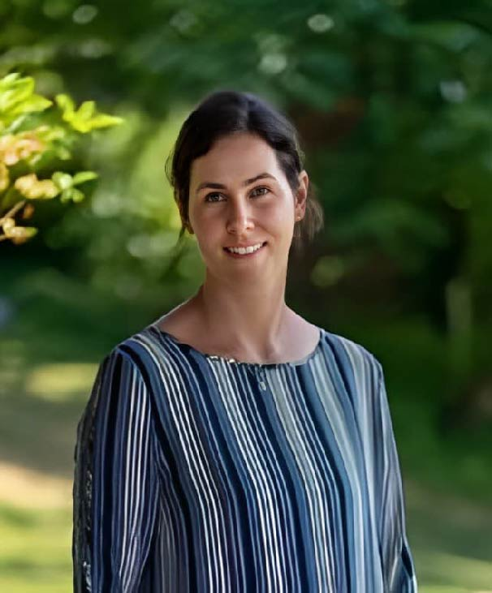
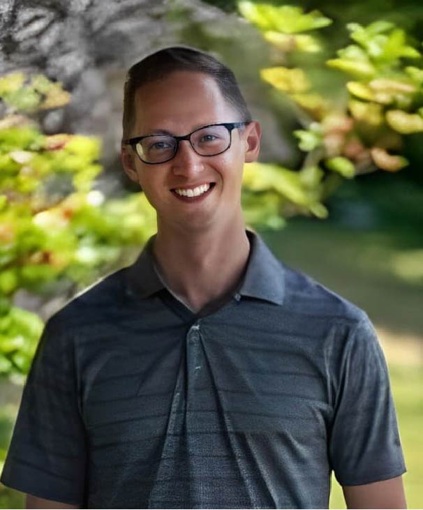
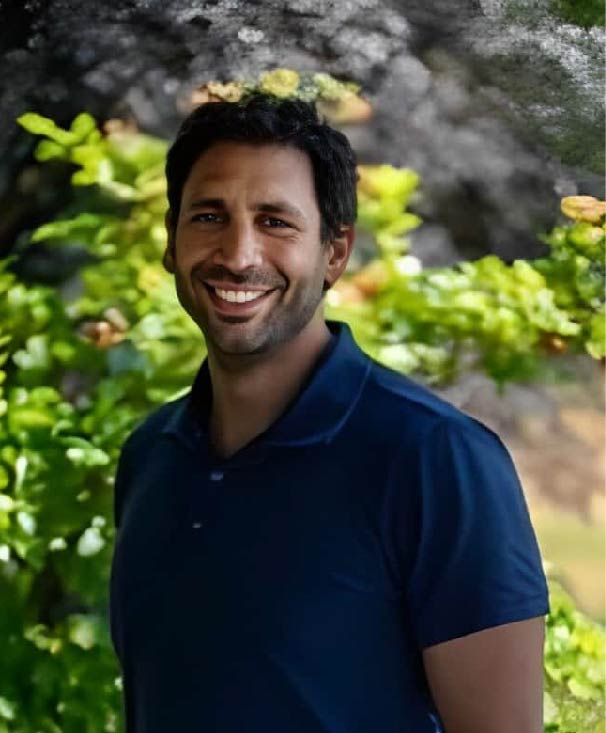

Kendra Mulligan
BScPT, CGIMS, FCAMPT
Kendra graduated from the University of Alberta in 1993, working
in Northern Alberta for 18 years, including 5 years as a clinic
owner. She has co-owned Ascent Physiotherapy in Comox since 2010,
contributing to the community with evidence-based care.

Trish Leslie
BScPT
Trish graduated from Queen Margaret University in 2011. She has
experience in orthopaedics, women's health, geriatrics, neurology,
and sports physiotherapy, and is certified in acupuncture from
Acupuncture Foundation Canada Institute.

Jared Hromika
MPT, FDN/IMS
Jared graduated from UBC in 2014 and moved to the Comox Valley in
2015. He specializes in movement assessment, manual therapy, and
exercise prescription, and offers bike fitting services to
optimize comfort and efficiency for riders.

Shadi Fleifel
MPT, FDN/IMS
Shadi, with a Master’s in Physiotherapy from Perth, Australia, has
worked with top sports teams and specializes in sports
rehabilitation and treating musculoskeletal injuries. He is
committed to ongoing professional development.
Chelsey de la Rey
MPT
Chelsey graduated from UBC in 2019 and is dedicated to providing
individualized care in Comox Valley. She has a strong sports
background and aims to help clients achieve their goals through
manual therapy and exercise prescription.
Dylan Rybski
MPT, IMS
Dylan, originally from Vancouver Island, completed his Master’s in
Physical Therapy at UBC and has advanced training in concussion
management and manual therapy. He combines exercise rehab and
practical skills to treat a variety of patients.